01
Kualitas Sumber Daya Manusia
Mewujudkan kualitas sumber daya manusia Desa Jayamulya yang unggul dan berdaya saing.
Perpustakaan digital ini merupakan hasil program kerja mahasiswa KKN Universitas Pelita Bangsa yang dipersembahkan oleh Desa Jayamulya untuk mendukung semangat literasi dan minat baca masyarakat Kecamatan Serang Baru — kapan saja, di mana saja, tanpa biaya.
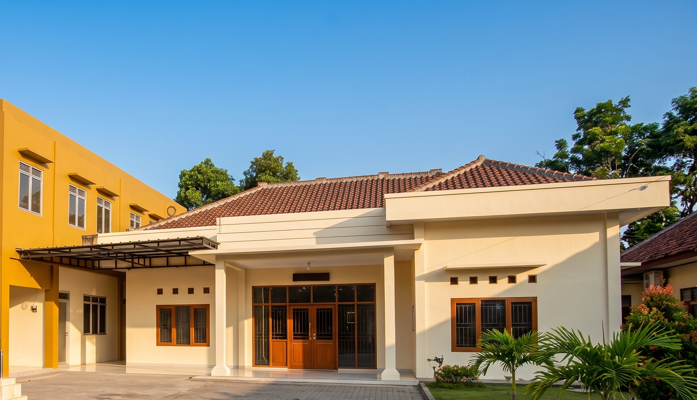
Desa Jayamulya adalah salah satu desa di Kecamatan Serang Baru, Kabupaten Bekasi, Jawa Barat. Melalui program Kuliah Kerja Nyata (KKN) Universitas Pelita Bangsa tahun 2026, desa ini menghadirkan Perpustakaan Digital sebagai wujud nyata dukungan terhadap budaya literasi dan minat baca masyarakat.
Perpustakaan digital ini hadir agar warga Desa Jayamulya, pelajar, serta masyarakat Kecamatan Serang Baru yang berkunjung dapat dengan mudah mengakses berbagai bahan bacaan — mulai dari buku pelajaran, cerita anak, novel, hingga referensi umum — kapan saja secara gratis dan tanpa batas.
Peningkatan Kualitas Aparatur dan Pelayanan Bidang Pemerintahan, Pembangunan dan Kemasyarakatan Desa Jayamulya yang Berkelanjutan.
— Visi Desa JayamulyaMewujudkan kualitas sumber daya manusia Desa Jayamulya yang unggul dan berdaya saing.
Meningkatkan kesejahteraan sosial ekonomi masyarakat yang berbasis pertanian.
Memelihara kesinambungan lingkungan dan pembangunan yang berkelanjutan.
Meningkatkan kinerja pembangunan desa di segala bidang secara merata.
Memelihara stabilitas kehidupan masyarakat yang aman, tertib, tentram, dan dinamis.
Mewujudkan aparatur Pemerintah Desa yang berwibawa dan melayani sepenuh hati.
Rangkaian kegiatan mahasiswa KKN Universitas Pelita Bangsa bersama warga Desa Jayamulya.
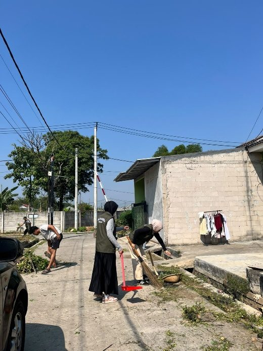
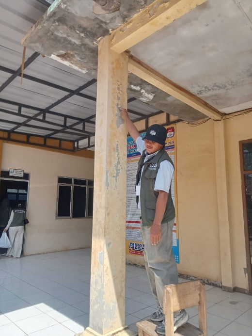
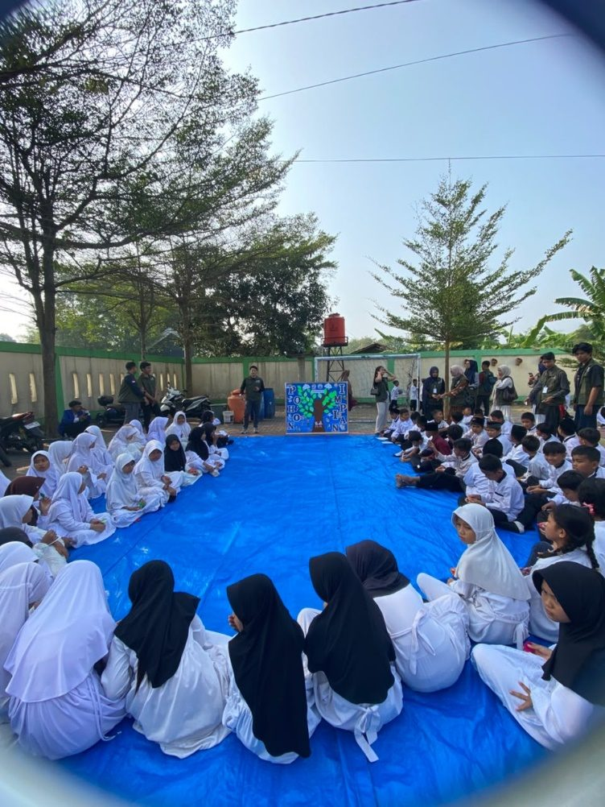
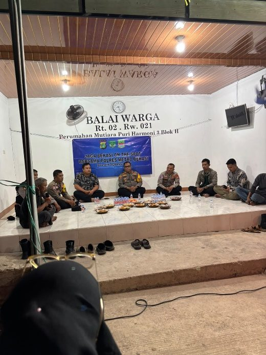
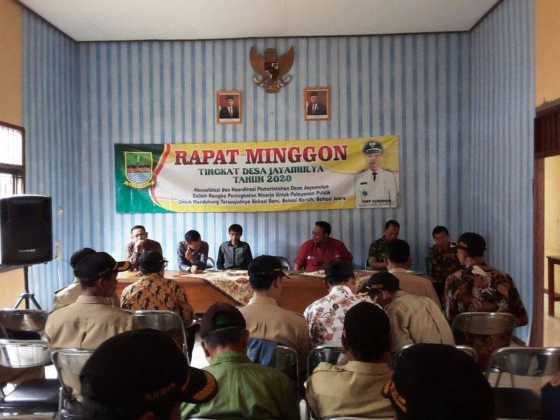
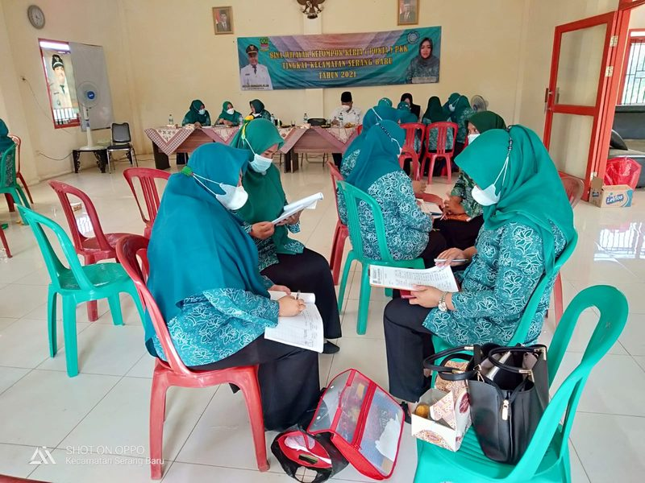
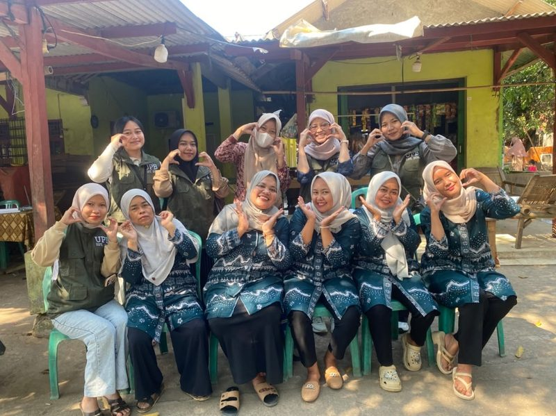
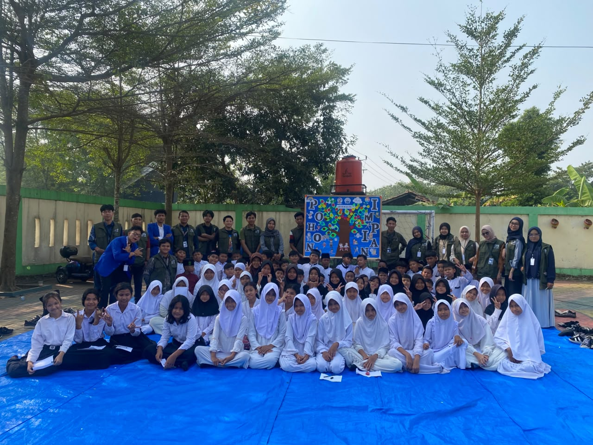
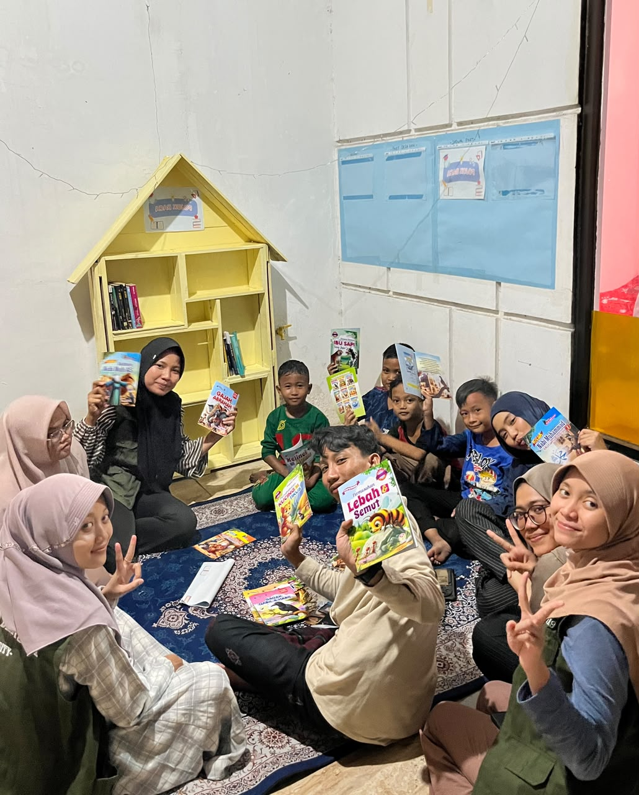
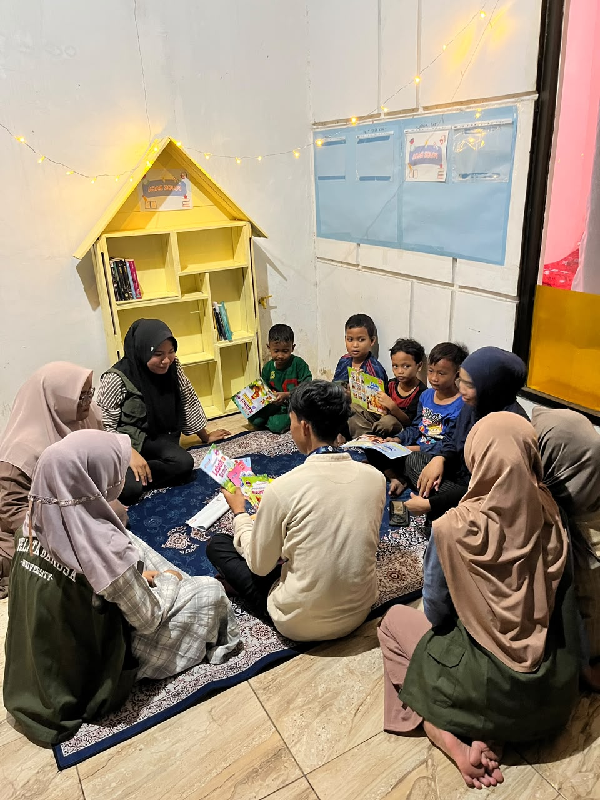
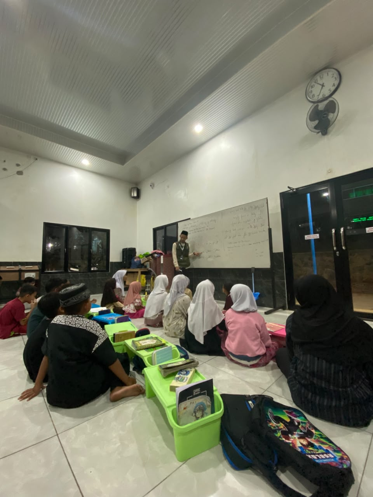
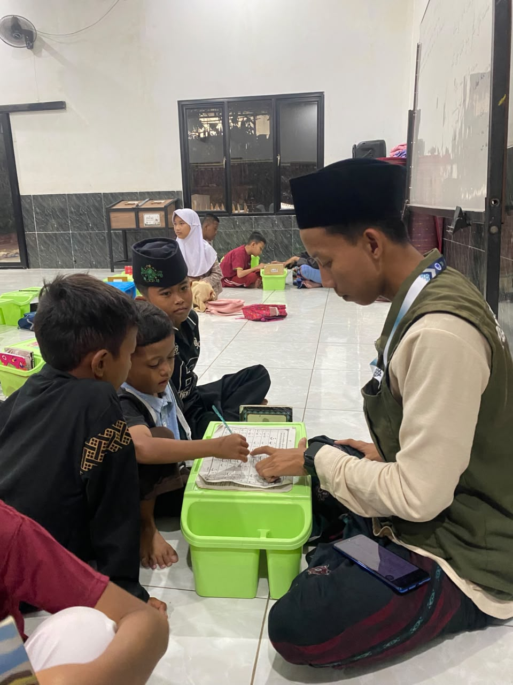
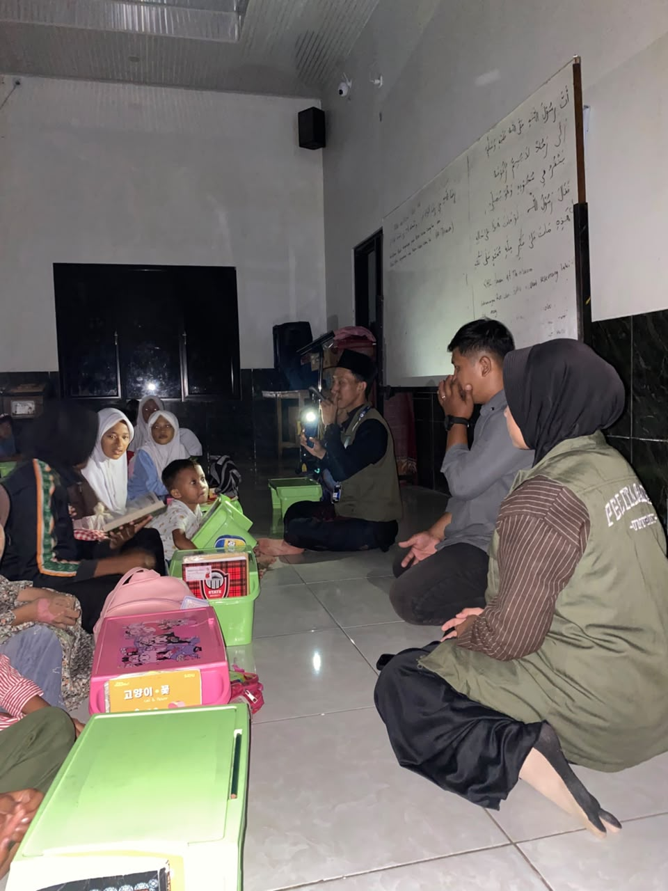
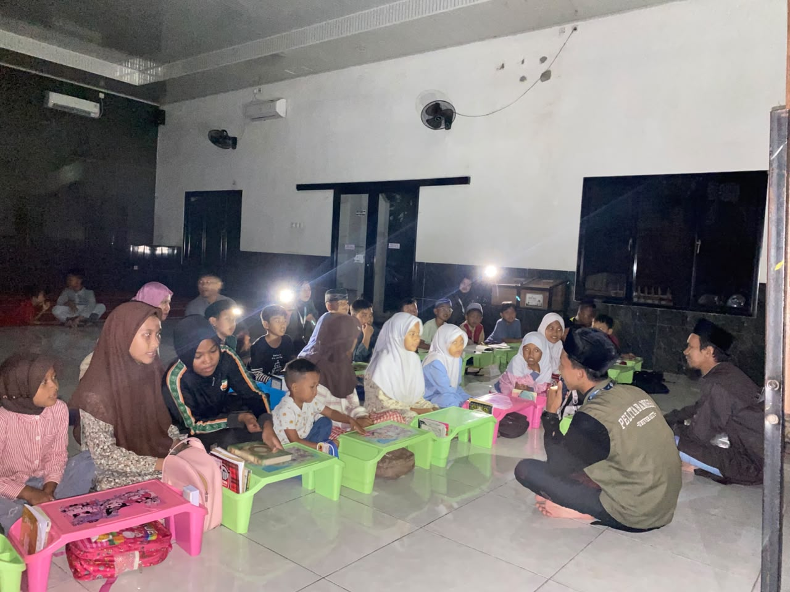
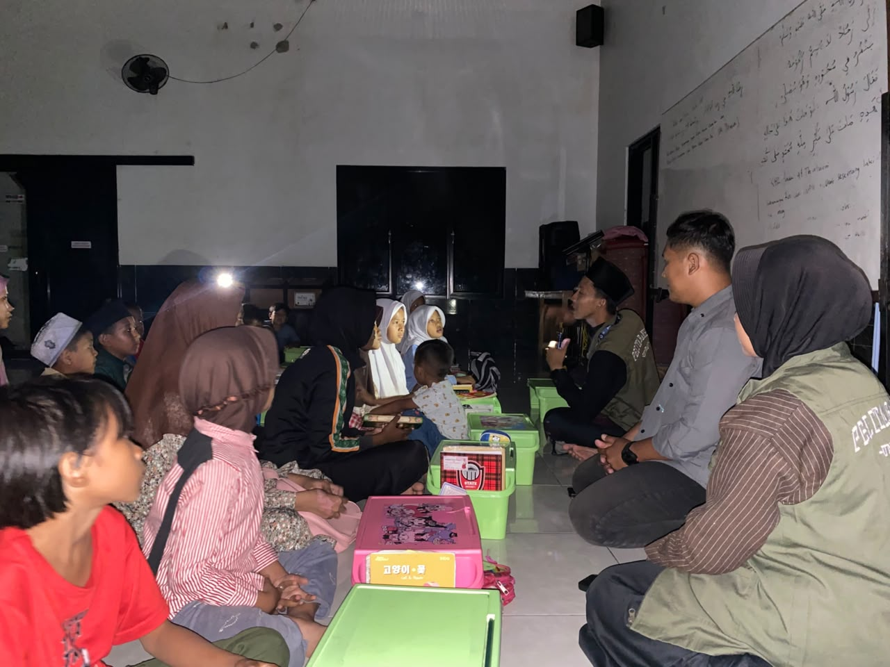
Seluruh koleksi mencakup buku pelajaran PAUD/TK, SD, SMP, SMA/SMK, cerita anak, novel, dan komik. Klik salah satu buku untuk membaca pratinjaunya langsung di halaman ini.
Tidak ada buku yang cocok dengan pencarian/filter ini.
Kenali sejarah, visi misi, dan kegiatan Desa Jayamulya lebih lengkap melalui buku profil resmi desa.
Dokumen resmi berisi visi, misi, dan rekam jejak kegiatan Desa Jayamulya, Kecamatan Serang Baru, Kabupaten Bekasi.
Unduh PDF
Kantor Desa Jayamulya
Jl. Cendrawasih, Desa Jayamulya
Kecamatan Serang Baru, Kabupaten Bekasi
Jawa Barat 17330, Indonesia